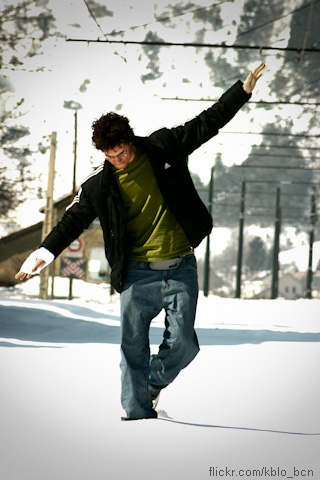

|  |
Sempre fui apaixonado pelas pessoas e suas experiências. Apesar disso, minha primeira câmera fotográfica registrava quase que exclusivamente viagens, paisagens e aventuras. Não demorou para que a percebesse como o instrumento fantástico que é para contar histórias, conhecer novas pessoas e estilos de vida, e, mais importante, captar e transmitir sentimentos. Desde este “click”, venho buscando aprimorar meu olhar para construir uma fotografia original e eloquente que combine o belo, o inesperado, o verdadeiro e o espontâneo, sempre com foco maior nas pessoas e em seu ambiente. Esta é minha casa na rede. Sejam bem-vindos! pedro peron Chapel Art Show 2011 - Artista selecionado |